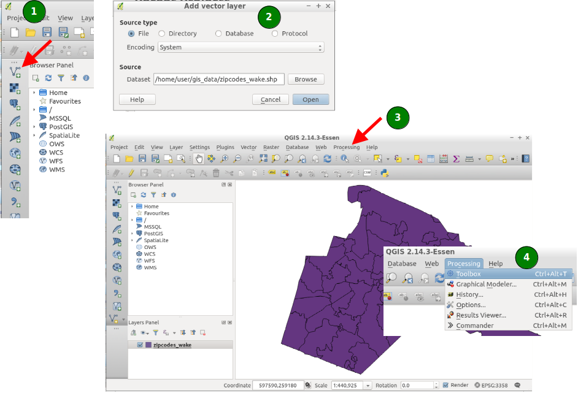
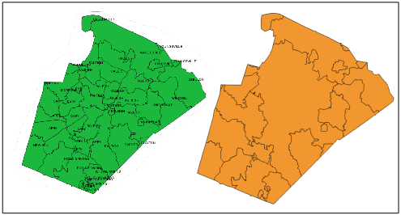
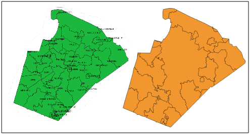
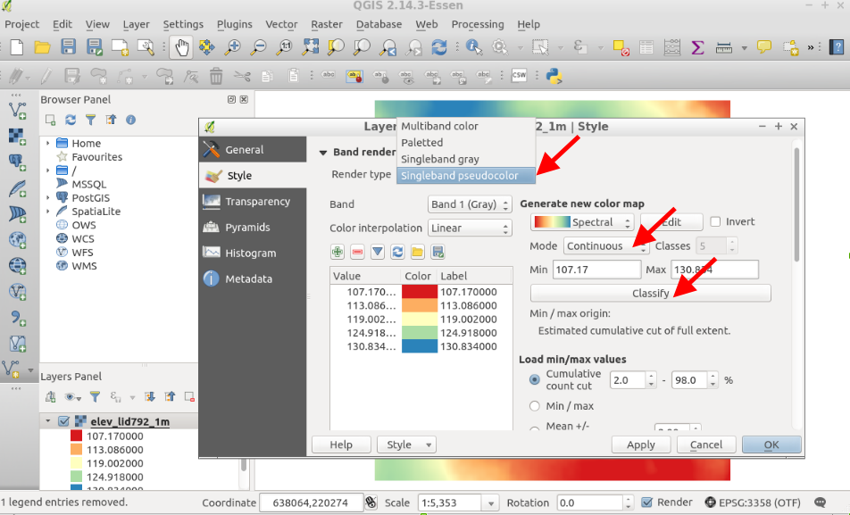

Intro QGIS-Processing-GRASS GIS


Session Objectives
- Starting OSGeo-Live
- ... of GRASS GIS 7
- … of QGIS
- Download of related course data
- Using GRASS GIS in QGIS through “Processing”
Preparation
Starting OSGeoLive
OSGeo-Live ISO available
Copy to DVD or USB flash drive, then boot from flash drive; or run it in a Virtual Machine environment.
See: quickstart
...sit back while the system boots up...

Optional: Configuration of region settings: OSGeo-Live Internationalisation Quickstart
Keyboard layout switcher:
To add a “flag” icon to the lower menu panel, do the following steps:

Optional: Configuration of keyboard layout

Configuration of region settings if needed: OSGeo-Live Internationalisation Quickstart (language + keyboard layout):
Update of language settings: For the menus: Logout > Change language in top menu > Login again.
Authentication:
User: user
Password: user
 Missing language?
Set it via the main applications menu
Missing language?
Set it via the main applications menu
Preferences
> Language Support
> Install/Remove languages
Web Download of course data sets
Please create a “gis_data” directory for the course data:
cd $HOME
mkdir gis_data
Download data from: mundialis WORKSHOP NAME BEU MUNDIALIS.DE noch ändern!!!!
folder: north_carolina/
- nc_zipcodes_wake_SHP.zip 308 KB
- elev_ncstate_500m_tif.zip 1.8 MB
- elev_lid792_1m_tif.zip 1.7 MB
[...]
Save these 3 files your computer into the new “gis_data” directory and unpack them.
 The other files we'll download later.
The other files we'll download later.
The maps are located in North Carolina, USA.
OSGeo-live: North Carolina sample data set
Duplikatseite Nr. 8?
Unpacking the course data set
Unpacking of the nc_zipcodes_wake_SHP.zip|.tar.gz (ZIP codes map of Wake county in North Carolina)
Linux:

- Create a directory “gis_data” in your home directory and unpack the file therein as follows (or use a graphical program):
mkdir $HOME/gis_data
cd $HOME/gis_data
tar xvfz /path/to/nc_zipcodes_wake_SHP.tar.gz
Mac OSX:

- Create a directory “gis_data” in your home directory and unpack the nc_zipcodes_wake_SHP.zip file therein.
MS-Windows:

- Create a directory “gis_data” in your home directory and unpack the nc_zipcodes_wake_SHP.zip file therein Note: avoid white space in the path as well as non-ASCII characters (it may work, though)
QGIS: “GRASS Toolbox” versus “Processing”
Two ways of using GRASS GIS from QGIS
GRASS Toolbox
- “traditional” GRASS GIS support in QGIS
- Connects directly to GRASS: uses region information and reads/writes GRASS data format directly
Processing (formerly SEXTANTE) → GRASS GIS provider
- “new” GRASS GIS support
- Runs GRASS GIS in a temporary session for each calculation
- … using GRASS GIS from QGIS (internal batch job mode)
The choice is up to the user...
So, which one? We will now use “Processing”!
Start QGIS from “Desktop GIS” in OSGeoLive
QGIS-Processing
Using QGIS and Processing

Vector exercise
dissolve
 

Dissolving geometry by string column attributes:
- SHAPE file is preselected according to legend
- Select “NAME” column for dissolving
- Run
Processing calls GRASS GIS in a temporal session which deliver the result back (here: SHAPE file)
Raster data
loading a 1m LiDAR map

styling the elevation map

hillshading
Please try yourself